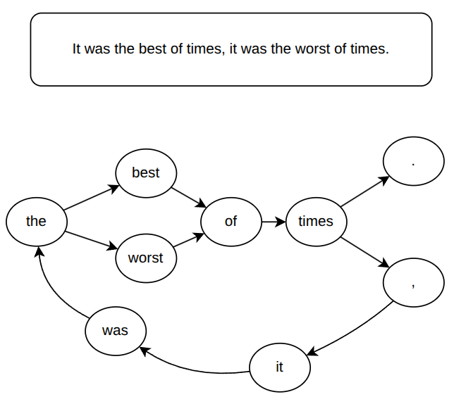
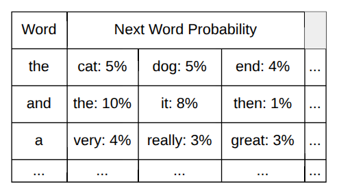
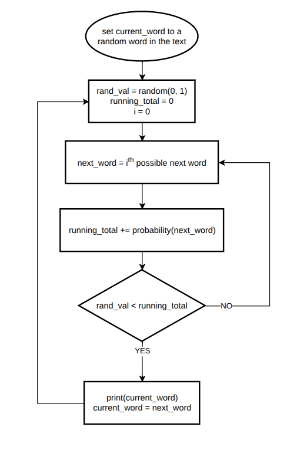
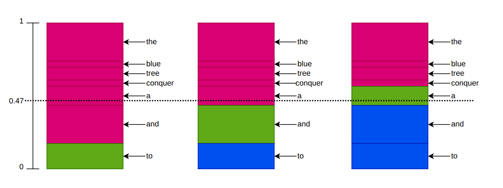

Generating Random Text With Markov Chains
The code is available to view and play with on Github. I will have some code snippets, but not the program as a whole.
The goal: Generate large amounts of text written in the same style as the source material.
The Algorithm
The algorithm consists of two parts, preprocessing of the training text and random generation of new text. The first part establishes the probability distribution and Markov chain and the second part, generating the text, is what matters for optimization because after taking the limit where the number of words to generate goes to infinity the first part goes to zero with how much it contributes to run time.
Preprocessing
To start, we need to parse the training text word by word. On each word, we will increment the count for the number of times the next word has appeared after the current word.
Example given:
It was the best of times, it was the worst of times.
Starting on the word It we would record that
was followed It once. Then we would move to
the next word. On was we would record the as
following was once. We would continue on until the second
occurrence of it where we now record that was
followed it twice. Then, the followed
was twice. However, when we reach the second occurrence of
the we now record that best has followed once
and worst has followed once.
data = list()
# gets a list with all the words in the training text in order
with open("moby_dick.txt", 'r') as raw_text:
data = raw_text.read().split()
frequency_table = dict()
for i, word in enumerate(data):
# The last word of the data
if i >= len(data) - 1:
frequency_table[word] = {"EOF": 1}
break
# Ensures a dictionary exists for each word we see
if word not in frequency_table:
frequency_table[word] = dict()
next_word = data[i+1]
if next_word in frequency_table[word]:
# Both the current and next word have been seen before
frequency_table[word][next_word] += 1
else:
# The next word is new
frequency_table[word][next_word] = 1Continuing on through the whole text will leave us with a list of words and frequencies of the words that followed it. To turn the frequencies into probabilities, simply divide each frequency by the number of times the current word has appeared. Arranging words as states and the edge weights according to the probability of following the current word. We can represent the training text as a Markov chain.

The Markov chain can be represented by a lookup table of probabilities given the current state or word. In Python, I used a dictionary of dictionaries.
totals = dict()
# Counting totals
for word, tallies in frequency_table.items():
totals[word] = 0
for count in tallies.values():
totals[word] += count
# Calculating probabilities
for word, tallies in frequency_table.items():
for next_word, count in tallies.items():
frequency_table[word][next_word] = count / totals[word]
probabilities = frequency_table
Generating Text
The Markov chain that we have created stores the statistical distribution of words in our training text. Randomly walking through the Markov chain will produce random text that has the same distribution of words as the training text and as a result will roughly sound like it.
We will use a technique called rejection sampling to generate text. Start by picking a random word.
- Lookup the possible words that can follow the current word and their associated probabilities.
- Generate a random value from 0 to 1.
- Start a running total at 0.
- Take a possible next word for the current word and add its probability to the running total.
- If the random value is less than the running total, add the current option of next word to the output text and set it to be the current word.
- If the random value is NOT less than the running total, go back to step 4.

# The number of words to generate
n = 100000
all_words = list(probabilities.keys())
word = all_words[int(random.random() * len(all_words))]
for _ in range(n):
val = random.random()
running_total = 0
i = 0
# If the random value is less than the threshold
# for a word, keep that word.
while val >= running_total:
next_word = list(probabilities[word])[i]
if next_word == "EOF":
next_word = data[0]
running_total += list(probabilities[word].values())[i]
i += 1
#print(next_word, end=' ')
print(next_word, end=' ', flush=True)
word = next_wordWhen I first learned about this algorithm, it raised a lot of questions. I couldn’t understand how it was able to sample based on the distribution we wanted. To better explain it, I made the diagram below. The diagram shows three iterations through the algorithm with some example words probabilities. The random value is 0.47. The red sections are where the current choice of possible next word will be rejected, the green section is where it will be accepted, and the blue sections are almost another rejection because the algorithm would have already ended.

NOTE: The program we have written so far recognizes words with punctuation or capitalization as unique words. In the optimized version on Github, I separate words from their punctuation, but never deal with capitalization.
Optimization
I timed how long it took to generate 100,000 words with Moby Dick as the training text. The times are going to vary depending on your hardware and implementation of the algorithm, but they should give you an idea of why optimization is needed here.
Before optimization:
$ time python main.py
18 minutesAfter optimization:
$ time python main.py
5 secondsNOTE: These optimizations are for time efficiency, not space efficiency. For example, memoization makes the program run much faster, but takes up more memory to store previous calculations. I’m not sure how Numpy affects space efficiency, but it does make it much faster.
Numpy
Python is a slow language, a cheap way to make your program run faster without having to do any algorithmic optimization is to not run Python code. Numpy is written in C which makes it much faster. I switched all the native Python lists to Numpy arrays and built-in methods.
For example, at the start of the algorithm to pick the first word:
all_words = np.array(list(probabilities.keys()))
word = all_words[int(rng.random() * all_words.size)]rng.choice Instead of Rejection Sampling
Sampling from a discrete probability distribution is a very common problem, so the good folks at Numpy wrote a method to do that into their rng class. This replaces a loop may iterate through all the possible next words with a single method call.
next_word = rng.choice(possible_next_words[word], p=next_word_probabilities[word])Memoization
Inside the text generation loop, the list of possible next words and list of probabilities gets regenerated for every iteration. Instead of regenerating those lists every loop, the program generates them once for the current word and stores them for later. When it lands on a word it’s already seen, it can just reference the lists instead of make new ones.
Conclusion
This was a really fun algorithm to write and the text it generates is great to play around with. The text it generates feels almost right, but never quite makes any sense. It’s like the uncanny valley of text because the program only generates words that it has seen follow the current word, each word will always logically follow the one before it. As you read, word by word, it makes sense to see each word follow the current one, but as your brain tries to piece together the meaning it just can’t. It’s frustratingly close to making sense, but it never does.
While building this project I showed a piece of text my program had generated to a coworker of mine. I told him it was an excerpt from Moby Dick and asked him to describe what was happening. He sat there struggling to understand it for 20 minutes before I felt bad enough to let him know what he was reading. Using older writing like Moby Dick (or The Complete Works of Shakespeare) makes it even harder to recognize that the words are meaningless because the source material is already so hard for modern English speakers to read.
I hope you had as much fun building this algorithm as I did!